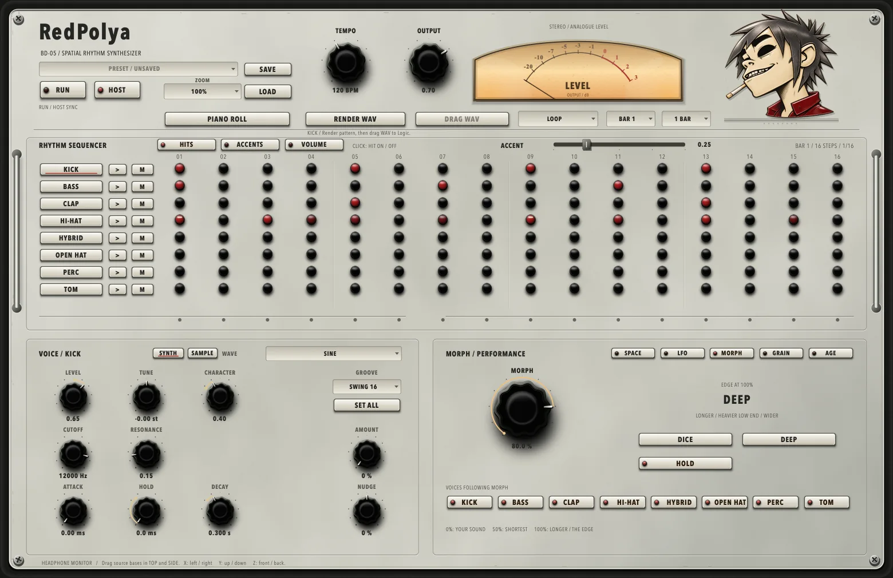
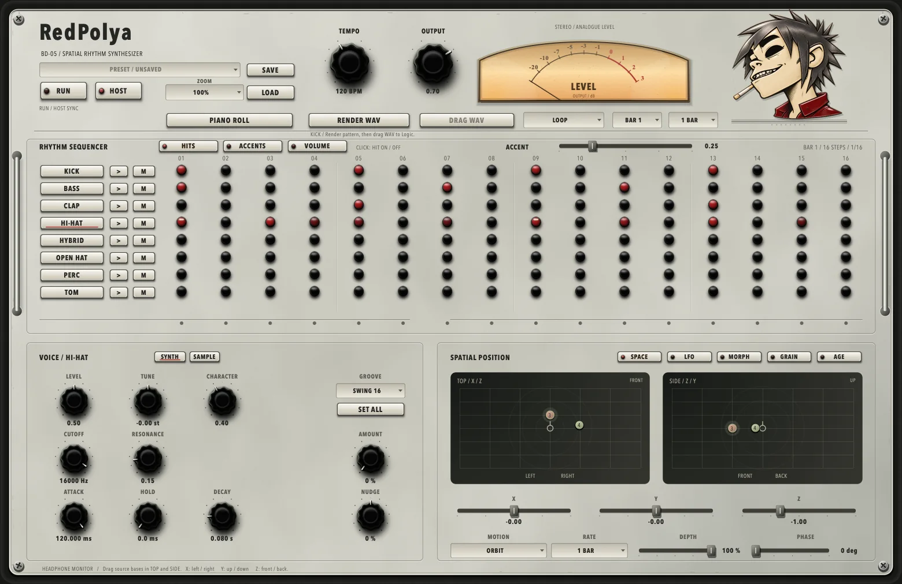
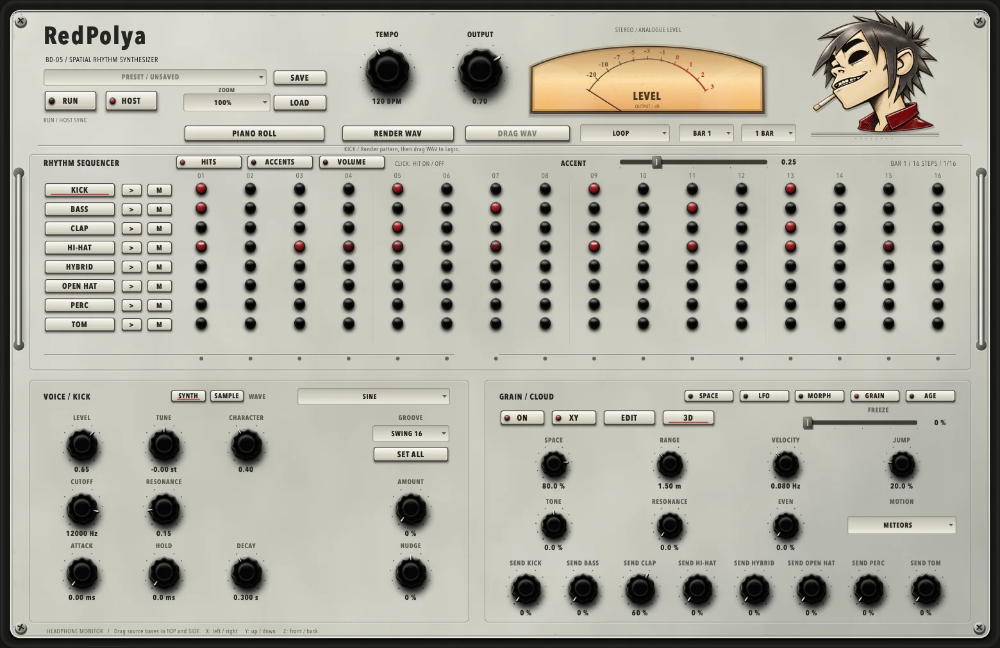
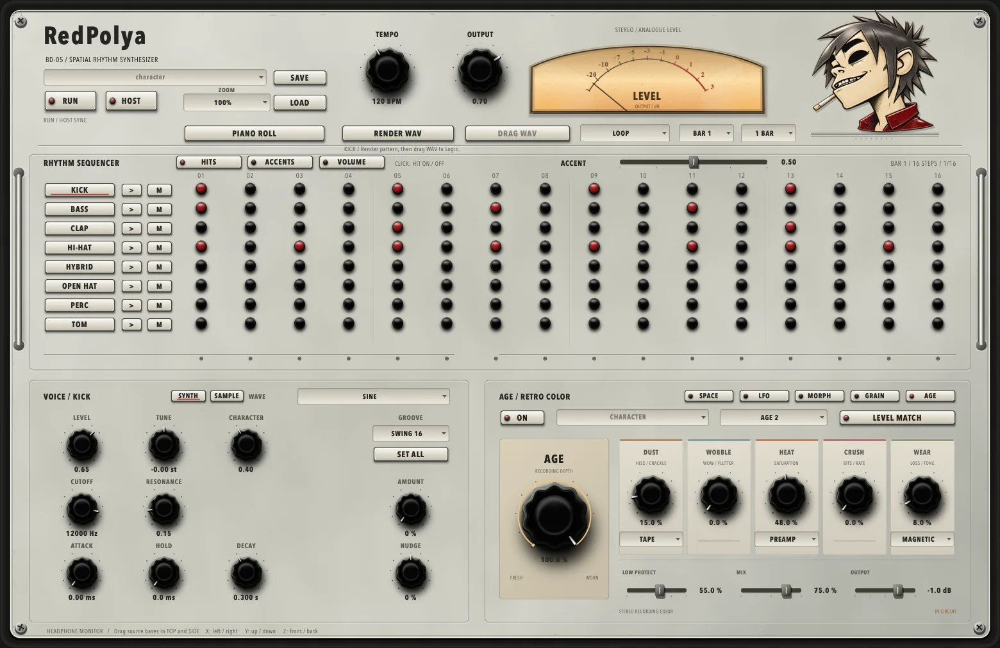

01
1. Суть одной фразой
RedPolya - драм-машина, которая заменяет целую цепочку плагинов: собирает бит, формирует его звучание, придаёт ему характер старой записи и заставляет звуки двигаться вокруг слушателя.
- 6 из 6 ключевых возможностей в одном инструменте. У ближайших конкурентов - не больше двух.
- Одна ручка MORPH превращает короткие удары в протяжённое звучание. Бит при этом остаётся тем же.
- Каждый голос живёт в 3D: бочка в центре, хэты кружат вокруг слушателя.
- Винтаж встроен: плёнка, винил и пыль без отдельного плагина.
02
2. Проблема музыканта
Битмейкер придумал ритм. Дальше начинается рутина, которая убивает вдохновение:
- 01Синтезатор для своих звуков и семплер для своих записей.
- 02Отдельный плагин, чтобы добавить плёнку, винил и пыль.
- 03Ещё один плагин, чтобы расставить звуки вокруг слушателя, и ручная автоматизация, чтобы они двигались.
- 04Гранулярный эффект, чтобы из ударов получить протяжённый фон.
Это четыре окна, маршрутизация, настройка каждого плагина и проект, который разваливается при переносе на другой компьютер. Пока музыкант всё это собирает, идея уходит.
03
3. Решение
RedPolya убирает эту цепочку. Всё, что раньше требовало четырёх плагинов, встроено в одну драм-машину и работает в темпе бита.
Музыкант запускает бит и формирует его звучание прямо во время воспроизведения: укорачивает и удлиняет звуки, состаривает запись, расставляет и двигает инструменты вокруг слушателя.
Например: бочка и бас держат основу, хэты кружат вокруг слушателя, из клэпа вырастает протяжённый фон, а AGE придаёт всему биту характер затёртой кассеты. Всё это - в одном окне, за пару минут.
Что получает музыкант:
- Скорость. Идея звучит сразу, без настройки цепочки эффектов.
- Свой звук. Синтез плюс свои семплы, MORPH, AGE и 3D дают звучание, которого нет в чужих библиотеках.
- Надёжность. Бит, семплы, обработка и движение сохраняются в одном проекте и одном пресете.
04
4. Три главных преимущества
MORPH - от короткого удара до протяжённого звука одной ручкой
- Одна ручка меняет сразу всё: тембр, длину звуков, движение в пространстве и грув.
- Ручка меняет грув каждого голоса вместе со звучанием.
- Вместе с HOLD к середине хода звуки становятся короткими и чёткими, к правому краю - протяжёнными и атмосферными.
- Шаги и ноты остаются на месте. Музыкант меняет звучание, не теряя бит.
- Можно выбрать, какие голоса меняются, а какие держат свои настройки.
- Кнопка DICE выдаёт новое направление звучания. Номер варианта сохраняется с проектом, поэтому удачная находка не потеряется.

Почему это сильнее конкурентов: морфинг Microtonic и Visco меняет тембр. MORPH в RedPolya меняет ещё и длину звуков, их место в пространстве и грув.
Для музыканта: «Придумал ритм и за минуту услышал десять вариантов его звучания».
3D - звуки двигаются вокруг слушателя в такт музыке
- Каждый голос ставится в любую точку: слева, справа, сзади, сверху.
- Траектории движения: качание, круг, восьмёрка, приближение и удаление. Всё синхронизировано с темпом, без ручной автоматизации.
- Облако GRAIN превращает фрагменты звучащих инструментов в повторения и протяжённые звуки и двигает их в пространстве отдельно от основных голосов.
- Основа остаётся устойчивой, окружение движется свободно.
- В наушниках бит звучит объёмно, а не «внутри головы».


Почему это сильнее конкурентов: из драм-машин в сравнении размещение голосов вокруг слушателя есть только у браузерной Azimuth Drums. RedPolya даёт это в Logic Pro и добавляет движущееся облако GRAIN, которого нет ни у кого.
Для музыканта: «Бочка держит центр, хэты кружат вокруг тебя, а повторения клэпа вспыхивают в разных точках пространства».
AGE - плёнка, винил и пыль прямо в драм-машине
- Пять секций: пыль и шум (Tape / Vinyl / Radio), плавание плёнки, тёплый перегруз, цифровое огрубление и износ записи.
- Готовые характеры: «тёплая плёнка», «пыльный семплер», «затёртая кассета» и другие.
- Одна ручка AGE задаёт глубину эффекта, отдельные ручки дают точную настройку.
- AGE обрабатывает уже сведённое пространство, поэтому весь бит звучит как одна старая запись.
- Настройки сохраняются вместе с проектом и пресетом.

Почему это сильнее конкурентов: Battery 4 и Knight Drum 2 тоже умеют состаривать звук, но в них нет ни MORPH, ни движения голосов вокруг слушателя. В RedPolya винтаж работает вместе со всем остальным.
Для музыканта: «Собрал чистый бит и одним движением сделал из него запись с пыльной кассеты».
У каждой секции - MORPH, GRAIN, SPACE и AGE - свои ручки. Быстрый результат одной ручкой и полный контроль, когда он нужен.
05
5. Сравнение с конкурентами
Сравнение составлено по официальным описаниям производителей на 13.11.2026.
5.1. Главное преимущество
RedPolya - единственная драм-машина в этом сравнении, где в одном инструменте есть всё: синтез и свои семплы, морфинг набора, положение и движение каждого голоса вокруг слушателя, гранулярное облако в пространстве и винтажная окраска.
Конкуренты закрывают одно-два направления. RedPolya закрывает все шесть.
5.2. Сводная таблица
| RedPolya | XO | Microtonic | Visco | Battalion | Battery 4 | Knight Drum 2 | Azimuth Drums | |
|---|---|---|---|---|---|---|---|---|
| Синтез и свои семплы в одном инструменте | — | — | — | — | ||||
| Морфинг звучания набора | — | — | — | — | — | |||
| Положение каждого голоса вокруг слушателя | — | — | — | — | — | — | ||
| Движение голосов вокруг слушателя | — | — | — | — | — | — | ||
| Гранулярное облако, движущееся в пространстве | — | — | — | — | — | — | — | |
| Винтажная окраска: шум, плёнка, плавание | — | — | — | — | — | |||
| Итого из шести | 6 | 0 | 1 | 2 | 1 | 1 | 2 | 2 |
- есть в официальном описании; — - не заявлено.
5.3. RedPolya против каждого конкурента
| Конкурент | Что умеет | Преимущество RedPolya |
|---|---|---|
| XLN Audio XO | Карта семплов, замена набора, грув | XO подбирает готовые семплы. RedPolya создаёт звук: синтез плюс свои семплы в одном ударе, MORPH и движение каждого голоса вокруг слушателя |
| Sonic Charge Microtonic | Синтез, секвенсор, морфинг | Microtonic звучит в стерео и только синтезом. RedPolya добавляет свои семплы, 3D-движение, облако GRAIN и винтажный блок AGE |
| Forever 89 Visco | Моделирование семплов, морфинг, секвенсор | Visco меняет тембр. RedPolya меняет ещё и место звука: голоса и облако GRAIN движутся вокруг слушателя, AGE даёт характер старой записи |
| Unfiltered Audio Battalion | Синтез и семплы, гранулярная обработка, секвенсор | Гранулярность Battalion остаётся в стерео. В RedPolya облако GRAIN и каждый голос живут в пространстве вокруг слушателя |
| Native Instruments Battery 4 | Семплер с насыщением, LoFi и шумом | Battery работает с готовыми семплами. RedPolya синтезирует звук, меняет набор одной ручкой MORPH и двигает голоса в 3D |
| Knight Drum 2 | Синтез и семплы, состаривание звука | Knight Drum состаривает звук. RedPolya вдобавок превращает удары в протяжённые звуки через MORPH и двигает их вокруг слушателя |
| Azimuth Drums | Браузерная драм-машина с бинауральным размещением | Azimuth работает в браузере. RedPolya - плагин для Logic Pro с синтезом, семплами, MORPH, облаком GRAIN и винтажным блоком AGE |
5.4. Вместо цепочки плагинов
Похожий результат без RedPolya собирают из нескольких продуктов:
- драм-машина для бита;
- RC-20 Retro Color для винтажной окраски;
- SILO для гранулярных хвостов;
- DUST или другой пространственный плагин для бинаурального размещения.
В RedPolya всё это встроено в драм-машину, работает в темпе бита и сохраняется в одном проекте.
5.5. Главный тезис
RedPolya объединяет создание бита, винтажный характер и движение звуков вокруг слушателя. Музыкант собирает ритм и сразу слышит, как он звучит и где находятся его инструменты.
Ценность для покупателя: меньше окон и плагинов, одно сохранение для всех настроек и изменение звучания прямо во время воспроизведения.